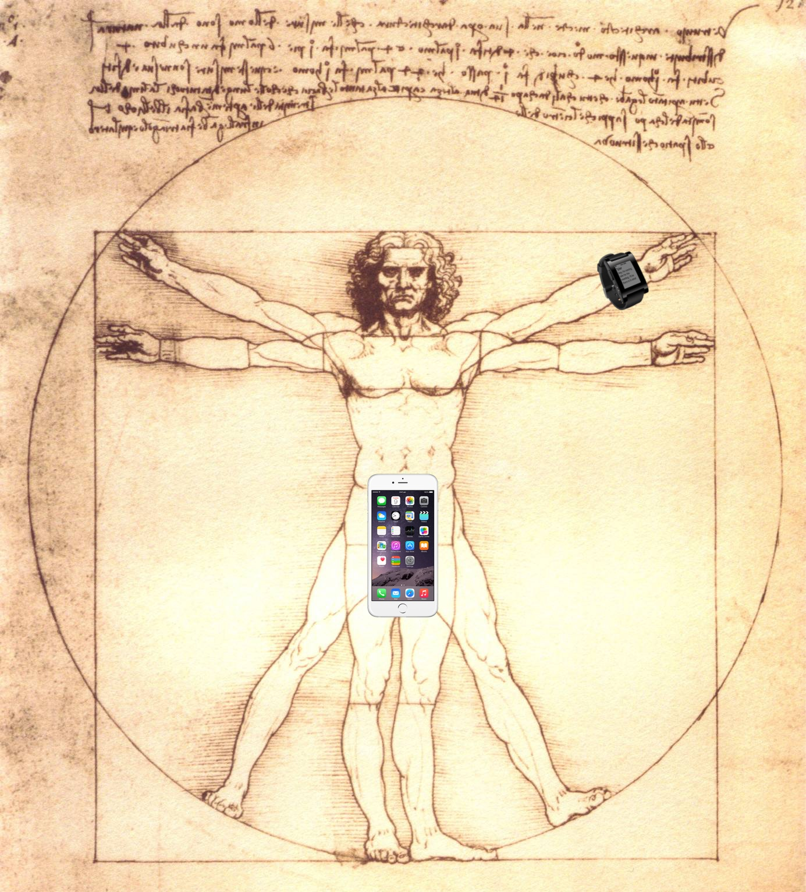
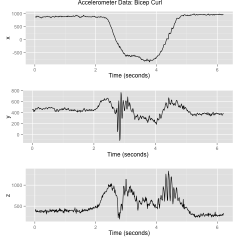
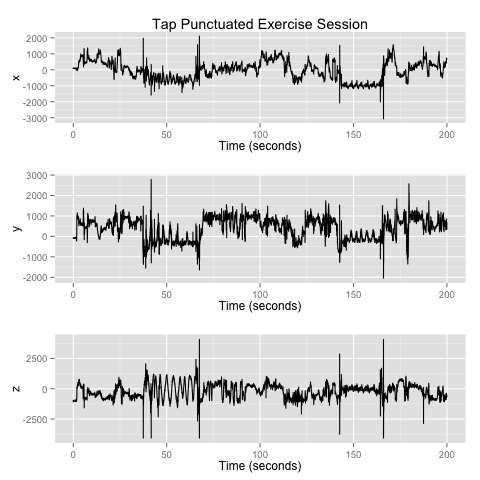
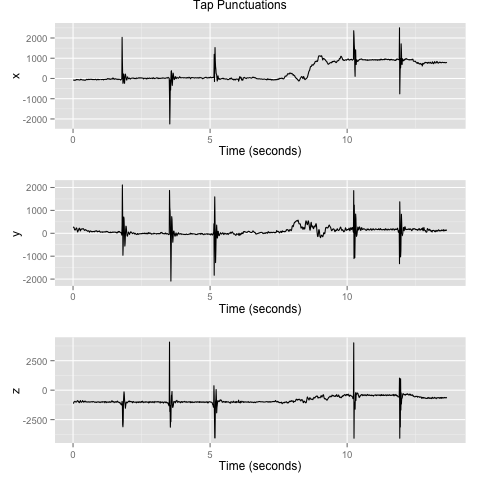
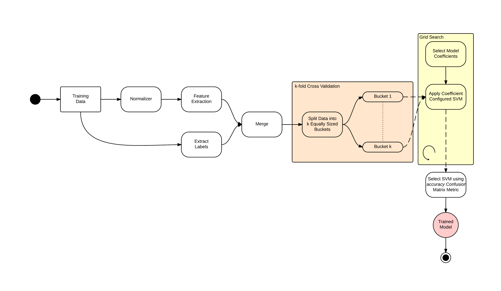
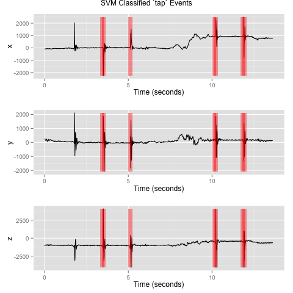
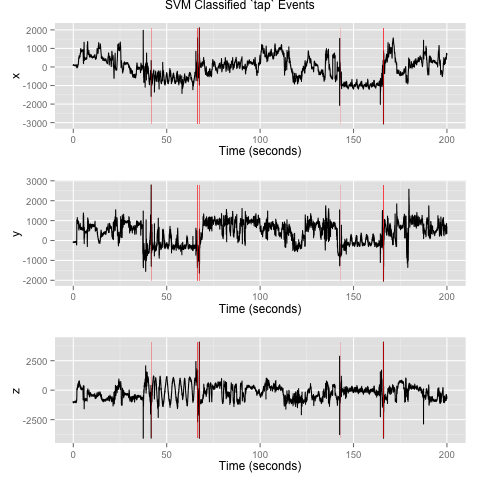
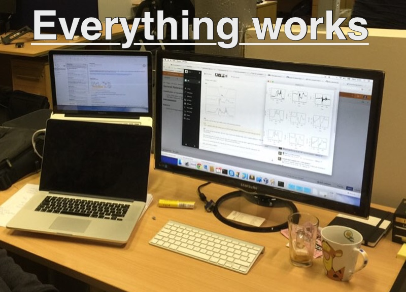
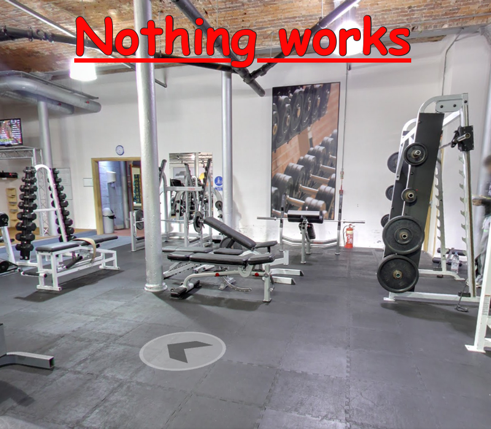

In the next few posts, we will describe the journey of collecting (tagged) data, experimenting with potential classification models, and then finally implementing these models. It was revealing to experience the challenges of implementing truly reliable and near real-time analysis system in a world of unerliable networks and users who cannot tolerate interruptions.
We ended up performing principal component analysis on a type II DCT of the sensor data we receive: this then formed basis for the training set of a support vector machine. We have done the modelling in R, then exported the libsvm settings, and loaded this code in Scala, where we perform the classification on the incoming stream of data.
Let's review the application as it stands, and where we want to take it. We have a collection of sensors, each sensor is capable of transmitting (in near real-time) various physical measurements. A pebble smartwatch can send us accelerometer data, Moto 360 Android Wear watch can transmit accelerometer and heart rate data, and so on. The mobile application that receives the sensor information can add its own accelerometer and GPS data. All of this gives us the first model of our sensor network.
Here, our 21st century vitruvian man has an iPhone and a Pebble. The app running on the iPhone receives opaque blocks of data from the Pebble, adds its own opaque block of GPS and accelerometer data, and packs these blocks-together with the location on the body where the blocks came from-into a single payload that it sends to the server. The phone software tries to ensure reliable transport from the sensors, and adds synchronisation marks into the stream, which the server reads to check that it is getting consistent stream of data. As it stands today, an hour's exercise session results in approximately 4 MiB of data.
Our hypothesis is that-given some context-it is possible to recognise what exercise the user is doing by looking at accelerometer data received from one (though ideally more than one) sensor with a known location on the body. And so, we jumped into measurements. Equipped with a Pebble and the mobile app, yours truly slaved away in the gym. All charts show outputs of the accelerometer sensor (not acceleration) in the Pebble, in the range of -4000 to 4000 (13bit signed big-endian integer) on the x, y and z axes. The sampling rate is 100 Hz.
Let's begin by looking at the accelerometer data for a single bicep curl recorded on the wrist. It is easy to spot that x is the dominant axis of movement: here ranging from roughly -1000 to +1000. This represents the extreme positions of the arm.
As you can see, an isolated bicep curl in lab conditions (just moving one's arm without any weight while sitting next to the desk) is nice and clear, but attempting to find something meaningful in an hour's worth of real exercise in the gym is very hard. We had to find a way to make it possible for us: to start tagging the data; to construct the model; to train the SVM; to perform the analysis; to ... and ultimately, to let me keep on top of my exercise without having to take a notepad and a pen to the gym. We needed to find a very distinct event that would allow us to separate our exercise from non-exercise to start the training process.
The next chart shows real data collected in the gym with two tap-punctuated sets of 10 repetitions of the same exercise. To a human eye, it is easy to spot the two regular acceleration patterns.
To start tackling the classification, we needed to make it easier to distinguish between exercise and non-exercise. One option was to require the user to take out the phone, and press a button to mark set start and end. This would have been an easy option, but it turned out to be unusable when we took the app to the gym and actually went about our exercise routines. However, we noticed that tapping the watch produces very distinct acceleration patterns. And so, a tap on the watch became our marker, and the first item to train our software to classify.
A tap on the watch turned out to be such an event.
As you can see, a tap is a very short event with very a sharp peak in the values along all three co-ordinate axes. And so, we set out to define a machine learning pipeline to train and build an SVM model for classifying taps.
Looking at taps, we estimated that they occur within a 250 ms time window. So, by sliding a 250 ms window across streamed data from an exercise session, we can analyse the sample data in each window and measure the confidence with which a model detects a tap.
Training an SVM consists in first codifying each 250 ms sample window as a feature vector. If, in addition, we have previously labelled the training data so that we know which windows contain tap events and which do not, then we can perform supervised learning and train an SVM model.
Codifying sample windows amounted to using a discrete cosine transform (a popular lossy compression algorithm used in audio and images) to extract a vector of numbers - i.e. our feature vector. Labelling of the sample windows/feature vectors was performed manually. Training the SVM model consisted of identifying coefficients (i.e. cost and γ) for which we had the best classification results. Here, supervised learning allows us to utilise a confusion matrix to calculate classification accuracy.
The trained model was then exported using the libsvm file format. This allows the SVM tap classification model to be reused in other programming contexts (e.g. Scala, Spark, etc.).
Applying the trained tap classifier to the training data produced the following results (red highlights indicate positively classified sample windows):
It is interesting to note here that the SVM classifier fails to recognise the first tap event. However, when presented with unseen tap punctuated exercise data, the SVM classifier proves to be quite capable (again, red highlights indicate positive classifications):
Given the poor quality of our training data, the results here are extremely promising!
Once we had promising results from our R model, it was time to port the work to Scala. The first task was fairly straight-forward syntax translation of R to Scala. The second tasks was more challenging: instead of discrete CSV inputs, each representing a single sensor that the R code was using, the Scala code needs to handle a stream of data; and on top of that, the stream contains data from potentially multiple sensors. Stream processing lead us to Akka Streams, with some custom components that essentially represent wire taps, zippers and modulators. The result is that our flow consumes the sensor data and produces classification results, which ultimately end up in the journal as events, which various views (read PersistentViews) consume to provide "live" session view, exercise analytics, and in the very near future, suggestions based on some exercise regime, courtesy of Spark.
We were very excited to use our system for real. And so, having done our tests in the comfort of our office, we distributed the Pebbles, iPods and iPhones to anyone we could coerce to go to the gym.
 (And yes, it is Comic Sans, only to add insult to injury!)
We were very happy with our model: the data we collected by tapping our watches in the office was easy to classify. And the experiments where we tapped the watch to indicate that we're about to begin a set, then performed 10 careful repetitions of the same exercise and tapped the watch again to indicate that we're done, and then ended the exercise session worked well. Then took the same experiment to the gym. It was a disaster.
The first day of real usage, I realised that the app had no background modes, and so, I had to remember to keep it awake by tapping the display from time to time. Once I forgot, the app wound enter background, the Bluetooth connection to the Pebble would be disconnected, and the session would end. Instead of collecting an hour's worth of data, I collected 20 lots of on average 4 minute blocks, and these blocks were cut off at unpredictable times.
And so, I added background support for the app. It now keeps the BLE connection to the Pebble, and can handle the app entering backround. I tested that I can start the exercise session, lock the phone, and the BLE connection would hold, and the server would still be receiving the data.
With the background mode support, it was time to do another exercise session. I started recording, and then allowed the app to enter background mode. All seemed well, and I really focused on the exercise. Unfortunately, I didn't realise that there isn't just one background mode. The phone attempts to save as much power as possible, and gradually enters deeper and deeper power-saving modes. The net result was that approximately 60 seconds after entering background mode, the application would drop about 10 % of the BLE packets received from the watch. This left huge holes in the data stream, and the lovely tap events that we look for were sometimes getting lost in the holes. (Remember, a tap is a very short and sharp event, it is usually over in 50ms. A hole in the data represents about 1200 ms.)
So, I tuned the background modes in the app—marking it VoIP class application, which seems to stop the phone from entering deep power-saving states. This had to be it!
On day 3, I found myself targetting different muscles in the gym; specifically in the room that is furthest away from our office WiFi. (Yes, our office WiFi reaches to the gym, but that's another story.) The app did not crash, but it simply dropped the requests it could not send to the server. The requests that did make it through sometimes arrived in the wrong order, and the data was useless.
So, I added offline support. The phone records everything it sends during the session in a file, and whenever it notices an transmission error, it stops sending further data, but tries to push one more message to the sever telling it to abandon the session. Once the session ends, and if the phone can reach the server, it will replay the entire transaction by posting the entire file.
I was really pleased with myself: everything worked as expected, and after a short debugging session, I left the server running and went home, with the plans to hit the gym the next morning.
Nothing worked. I could not log in, and without logging in, the app did not start the session. The server must have gone down... So, instead of recording another session's data, I ended up recording nothing. When I got back to the office, I found that I had set a breakpoint, and the server had hit the breakpoint.
After some more work, the app now supports full URL caching, following the content expiration policy set by the server. And so, after registering, it is possible to take the app entirely offline. When the app goes online next, it sends the recorded sessions to the server.
With reliable way to collect and transmit the data, I am ready to start to start recording properly tagged data. That is, not just tap, hic sunt leones, tap, here be lions, tap, ..., but tap, bicep curl, tap, and so on. We will use this tagged data to train our model by experimenting with the data in R, then exporting the trained model, loading it in Scala and applying it to the stream of accelerometer data.
So, this is the story of Lift so far. We had the opportunity to explore very interesting problems, and I like to think that we solved most of them. There is still a lot of work to do: we need to collect more data, and train our models; our next hypothesis is that humans are predictable, so a hidden markov model might give our classifiers extra information when classifying the exercise. (Say you're doing moderate-intensity curls: the probability the data following say the 5th curl is another curl is fairly high, the probablility that the data following 10th curl is another curl starts to drop. For high-intensity, the probablility drop-off might be even steeper. Naturally, this is a per-user model: everyone's exercise patterns are unfortunately quite different!)
In the meantime, follow our efforts at https://github.com/eigengo/lift, and we'd love to have your suggestions and contributions.